Asad Ali Shahid
I am a researcher at IDSIA (Dalle Molle Institute for Artificial Intelligence), the Swiss AI Lab, affiliated with SUPSI and USI in Lugano, Switzerland. My research focuses on reinforcement learning for robotic manipulation, sim-to-real transfer, and human-robot interaction. I am particularly interested in enabling humanoid robots to perform physically skilled, temporally precise behaviors—moving beyond locomotion toward expressive manipulation. More broadly, I aim to develop agents that can acquire diverse physical skills and collaborate meaningfully with humans in real-world environments. I am also affiliated with the Department of Mechanical Engineering at Politecnico di Milano.
G. Scholar
LinkedIn
ResearchGate
asadali.shahid at supsi dot ch
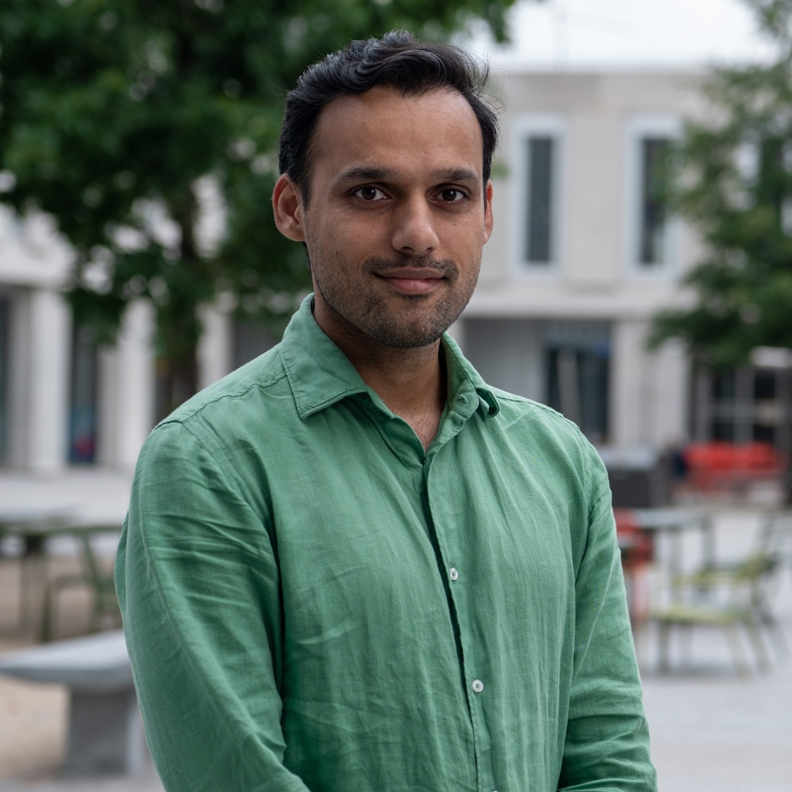
2025
Paper accepted at IROS 2025: GEAR - Gaze-Enabled Human-Robot Collaborative Assembly2023
Extended abstract at IJCAI 2023: Q-Learning-Based Variable Impedance Control for Human-Robot Collaboration2022
Paper published in Artificial Intelligence: Q-Learning Model Predictive Variable Impedance Control2021
Paper accepted at IROS 2021: Preference-Based Velocity Planner Optimization2020
Talk at Machine Learning Milan Meetup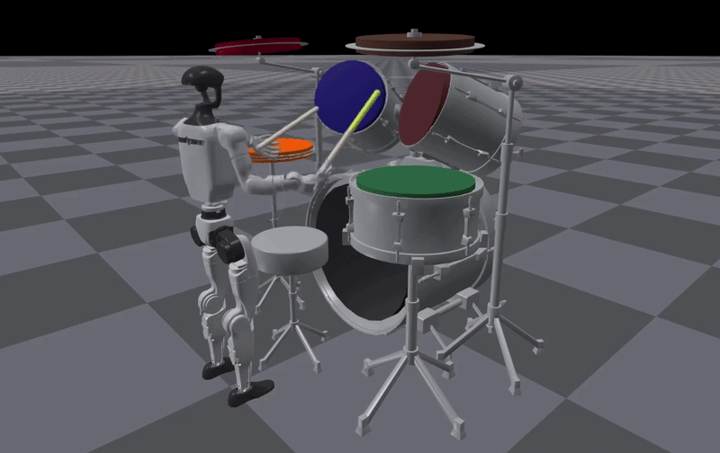
Robot Drummer: Learning Rhythmic Skills for Humanoid Drumming
Asad Ali Shahid, Francesco Braghin, Loris Roveda
ArXiv Preprint, 2025
Website •
PDF
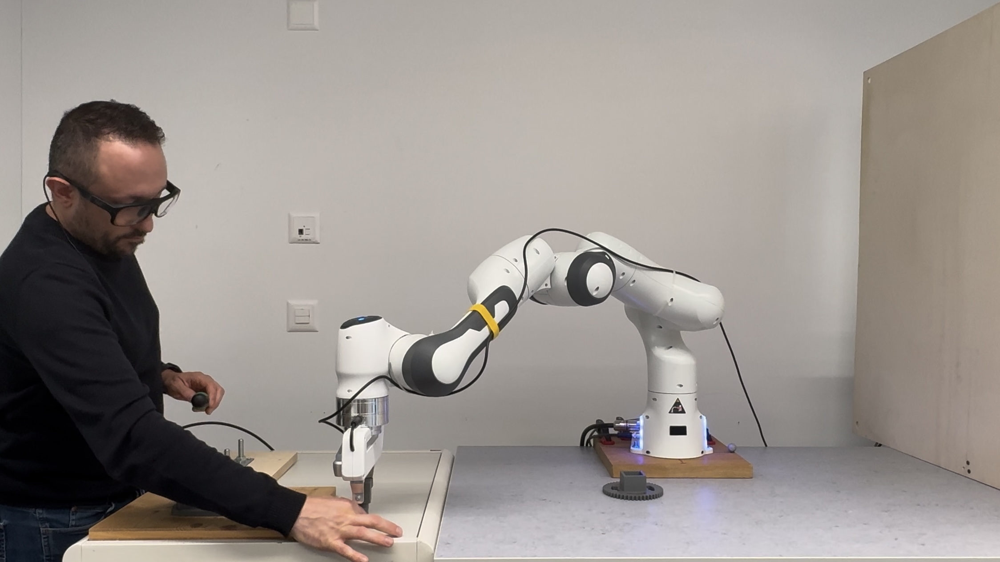
GEAR: Gaze-Enabled Human-Robot Collaborative Assembly
Asad Ali Shahid, Angelo Moroncelli, Drazen Brscic, Takayuki Kanda, Loris Roveda
International Conference on Intelligent Robots and Systems (IROS), 2025
Website •
PDF

Benchmarking Population-Based Reinforcement Learning across Robotic Tasks with GPU-Accelerated Simulation
Asad Ali Shahid, Yashraj Narang, Vincenzo Petrone, Enrico Ferrentino, Ankur Handa, Dieter Fox, Marco Pavone, Loris Roveda
IEEE International Conference on Automation Science and Engineering (CASE), 2025
Website •
PDF •
Code
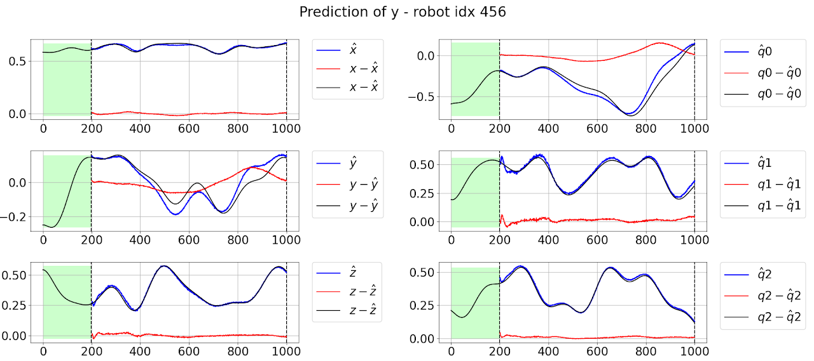
RoboMorph: In-Context Meta-Learning for Robot Dynamics Modeling
Manuel Bianchi Bazzi, Asad Ali Shahid, Christopher Agia, John Irvin Alora, Marco Forgione, Dario Piga, Francesco Braghin, Marco Pavone, Loris Roveda
International Conference on Informatics in Control, Automation and Robotics (ICINCO), 2024
Website •
PDF
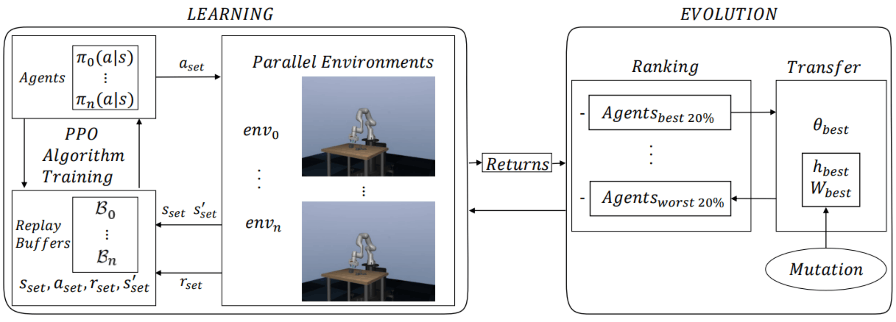
Adaptive Optimization of Hyper-Parameters for Robotic Manipulation through Evolutionary Reinforcement Learning
Giulio Onori, Asad Ali Shahid, Francesco Braghin, Loris Roveda
Journal of Intelligent & Robotic Systems, 2024
PDF
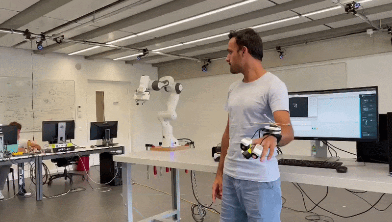
Evaluation of Tactile Feedback for Teleoperated Glove-Based Interaction Tasks
Omer Erencan Dural, Asad Ali Shahid, Guido Gioioso, Domenico Prattichizzo, Francesco Braghin, Loris Roveda
Human-Friendly Robotics (HFR), 2023
PDF •
Code
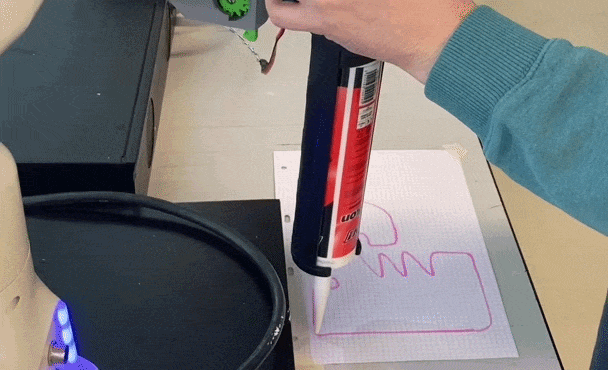
Q-Learning-based Model Predictive Variable Impedance Control for Physical Human-Robot Collaboration
Loris Roveda, Andrea Testa, Asad Ali Shahid, Francesco Braghin, Dario Piga
Artificial Intelligence, 2022
PDF
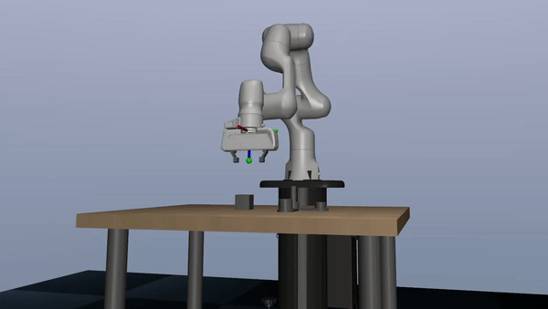
Continuous Control Actions Learning and Adaptation for Robotic Manipulation through Reinforcement Learning
Asad Ali Shahid, Dario Piga, Francesco Braghin, Loris Roveda
Autonomous Robots, 2022
PDF •
Code
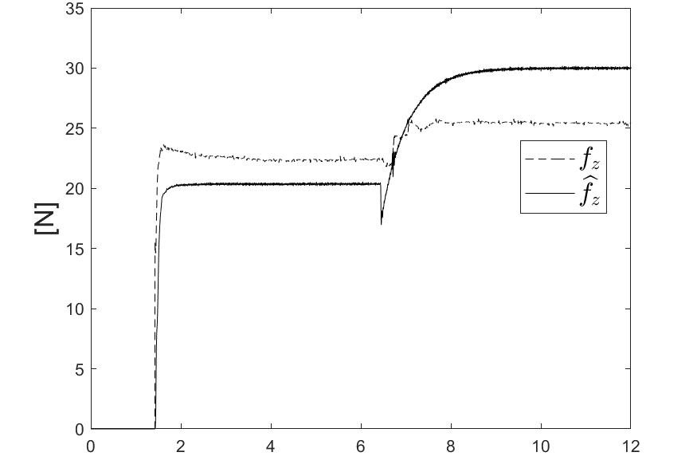
Sensorless Optimal Interaction Control Exploiting Environment Stiffness Estimation
Loris Roveda, Asad Ali Shahid, Niccolo Iannacci, Dario Piga
IEEE Transactions on Control Systems Technology, 2022
PDF
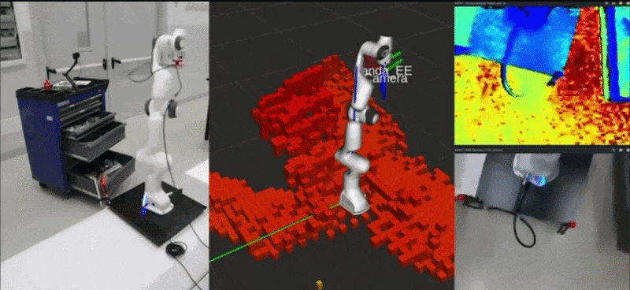
Robot End-Effector Mounted Camera Pose Optimization in Object Detection-Based Tasks
Loris Roveda, Marco Maroni, Lorenzo Mazzuchelli, Loris Praolini, Asad Ali Shahid, Giuseppe Bucca, Dario Piga
Journal of Intelligent & Robotic Systems, 2022
PDF
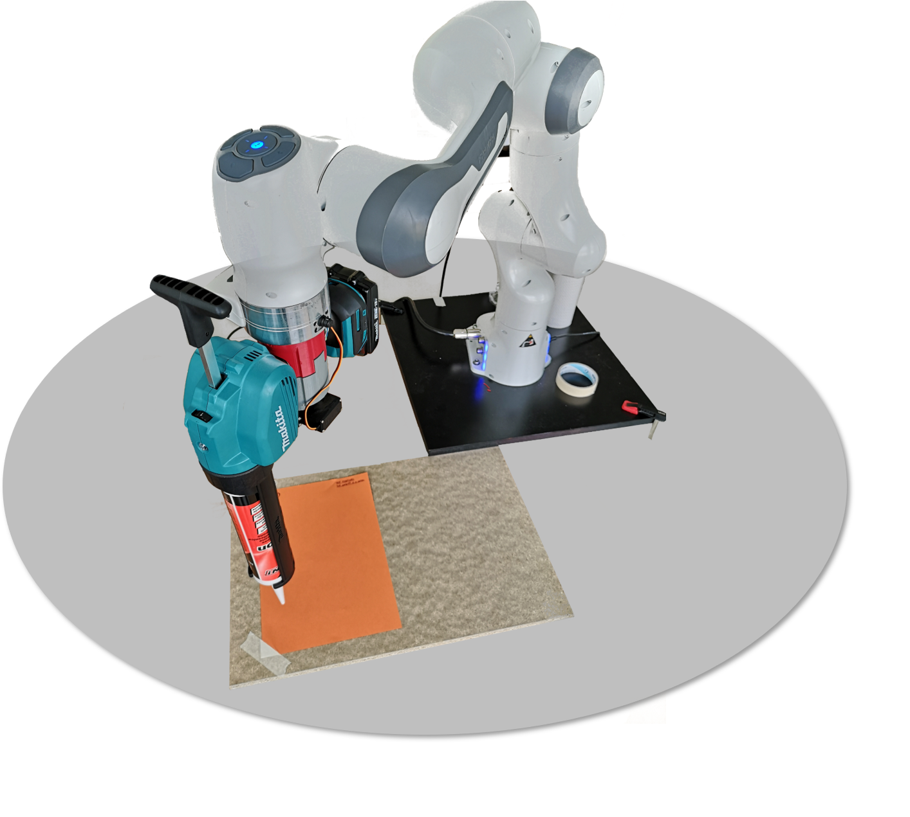
Pairwise Preferences-Based Optimization of a Path-Based Velocity Planner in Robotic Sealing Tasks
Loris Roveda, Beatrice Maggioni, Elia Marescotti, Asad Ali Shahid, Andrea Maria Zanchettin, Alberto Bemporad, Dario Piga
IEEE Robotics and Automation Letters (RA-L) / IROS, 2021
PDF
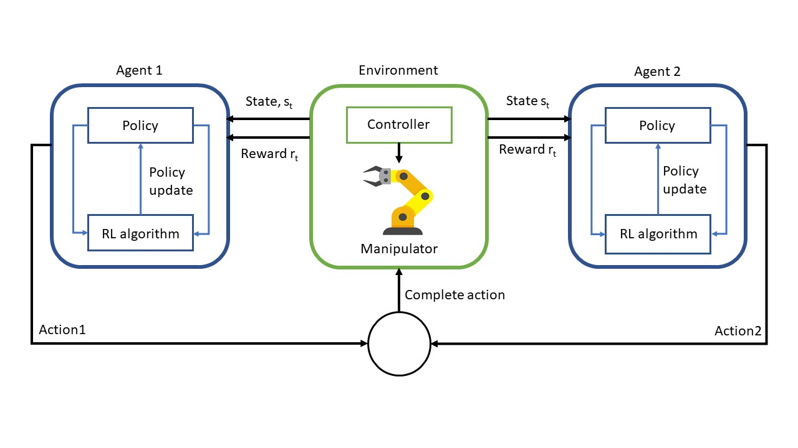
Decentralized Multi-Agent Control of a Manipulator in Continuous Task Learning
Asad Ali Shahid, Jorge Said Vidal Sesin, Damjan Pecioski, Francesco Braghin, Dario Piga, Loris Roveda
Applied Sciences, 2021
PDF
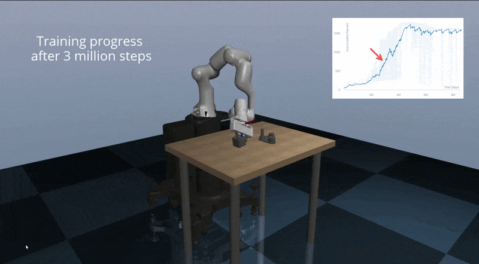
Learning Continuous Control Actions for Robotic Grasping with Reinforcement Learning
Asad Ali Shahid, Loris Roveda, Dario Piga, Francesco Braghin
IEEE International Conference on Systems, Man, and Cybernetics (SMC), 2020
PDF